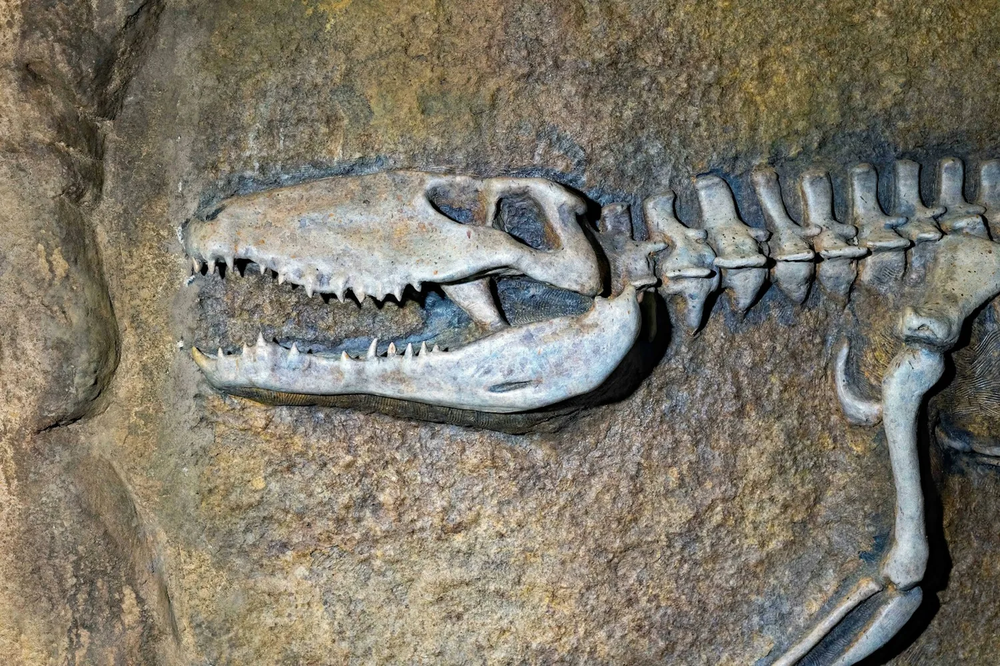

Museo del Jurásico de Asturias (MUJA)
El Museo del Jurásico de Asturias sorprende ya desde fuera, con un edificio en forma de huella de dinosaurio asomado al mar entre Colunga y Lastres. Dentro, esqueletos y réplicas a tamaño real, junto a más de 700 piezas y una de las mejores colecciones de icnitas de Europa, acercan a los niños al mundo jurásico de forma visual y accesible. Un plan de museo que engancha incluso a los más pequeños gracias a sus recreaciones a escala real.
Rasa de San Telmo, s/n, 33328, Colunga Visitar web oficial